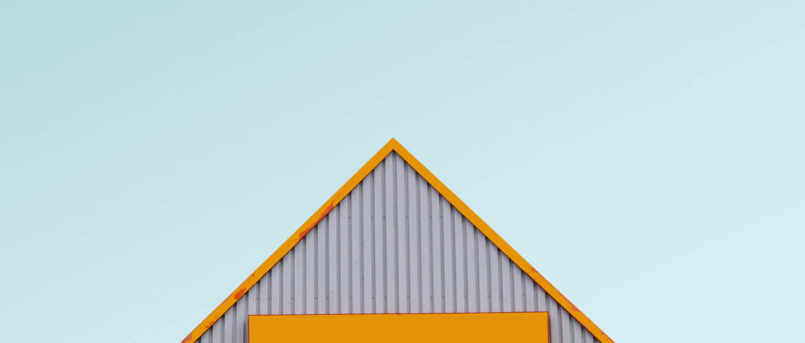
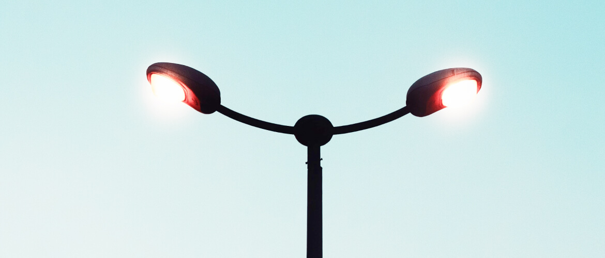

FashHanger is a bespoke sustainable high-fashion accessory company
based out of Berlin, currently operated by Siesly and her sister
Ashely. They needed help for a big rebrand and wanted to relaunch
their website.
Their goals were simple, create a unique e-commerce store that bring
a wonderful shopping experience at every stage of the buyer’s
journey
User Research and Personas

Who is your user? Indicate her KEY personality traits and help
round out her overall image.
Originally, the personality section of this persona was based
off the Myers Briggs personality test. According to the Myers
Briggs, there are 16 potential user personality types. Our
template integrates questions from this online personality test
example into a series of sliding bar graphics. If you’re
confused as to what the sliders mean, check out the Myers Briggs
basics article.
Initial Sketches
In the beginning, It’s just about brainstorming. I list out a
jumble of words and draw tiny sketches related to what I’m
working on (and find the parallels later). Personally, I prefer
paper with a grid so I can convey things responsively. Most of
the time perfection isn’t an issue and the sketches are just for
me.
Final Design

I played with adding a wireframe of the website flow that would
lead you in to each screen. For each of those screens I added a
floating footer that allows users to see where they are in that
particular flow and jump around as needed.” We’re digging this
InVision-made wireframe.